ProgrTest seche linge DPU BEKO
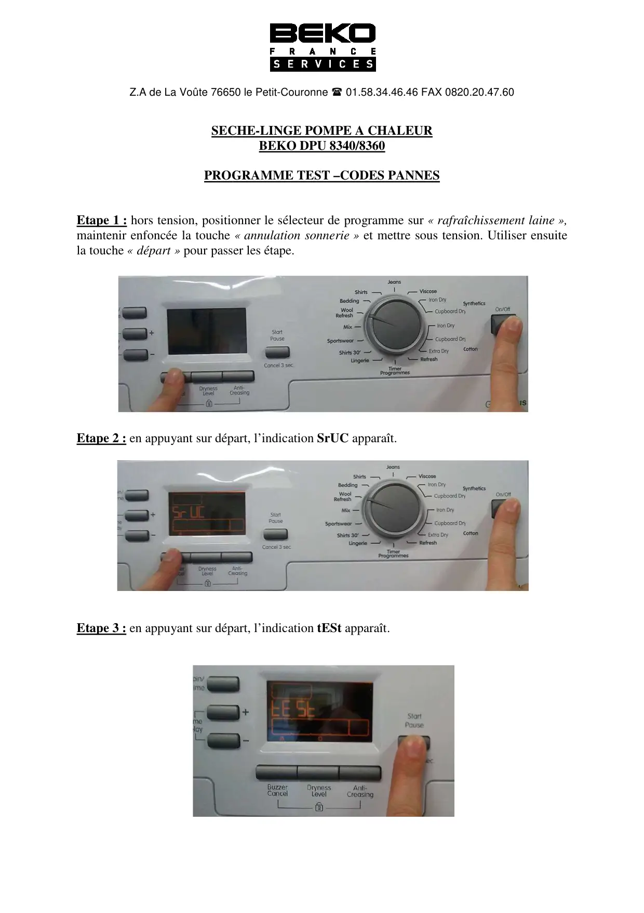
Z.A de La Voûte 7665SECPROGEtape 1 : hors tension, positiomaintenir enfoncée la touchela touche « départ » pour passEtape 2 : en appuyant sur dépEtape 3 : en appuyant sur dép50 le Petit-Couronne 01.58.34.46.46 FAX 0820CHE-LINGE POMPE A CHALEURBEKO DPU 8340/8360GRAMME TEST –CODES PANNESonner le sélecteur de programme sur « rafraî« annulation sonnerie » et mettre sous tensier les étape.part, l’indication SrUC apparaît.part, l’indication tESt apparaît.0.20.47.60îchissement laine »,ion. Utiliser ensuite
1 / 11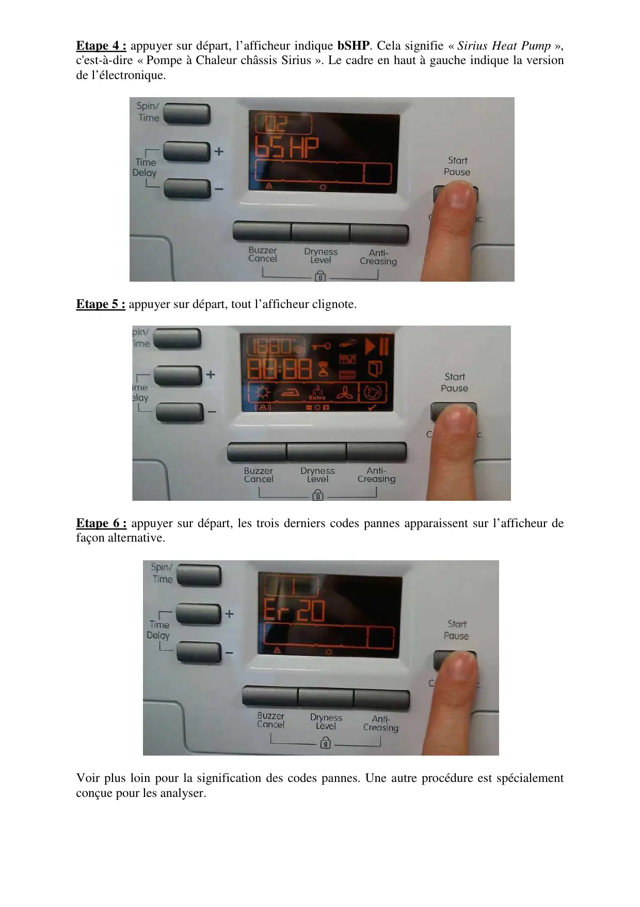
Etape 4 : appuyer sur départ, l’afficheur indique bSHP. Cela signifie « Sirius Heat Pump »,c'est-à-dire « Pompe à Chaleur châssis Sirius ». Le cadre en haut à gauche indique la versionde l’électronique.Etape 5 : appuyer sur départ, tout l’afficheur clignote.Etape 6 : appuyer sur départ, les trois derniers codes pannes apparaissent sur l’afficheur defaçon alternative.Voir plus loin pour la signification des codes pannes. Une autre procédure est spécialementconçue pour les analyser.
2 / 11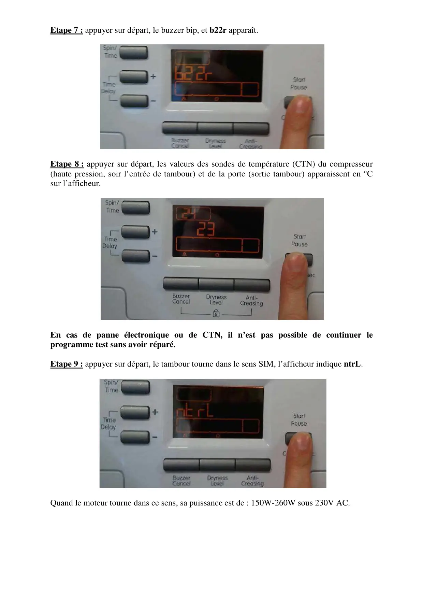
Etape 7 : appuyer sur départ, le buzzer bip, et b22r apparaît.Etape 8 : appuyer sur départ, les valeurs des sondes de température (CTN) du compresseur(haute pression, soir l’entrée de tambour) et de la porte (sortie tambour) apparaissent en °Csur l’afficheur.En cas de panne électronique ou de CTN, il n’est pas possible de continuer leprogramme test sans avoir réparé.Etape 9 : appuyer sur départ, le tambour tourne dans le sens SIM, l’afficheur indique ntrL.Quand le moteur tourne dans ce sens, sa puissance est de : 150W-260W sous 230V AC.
3 / 11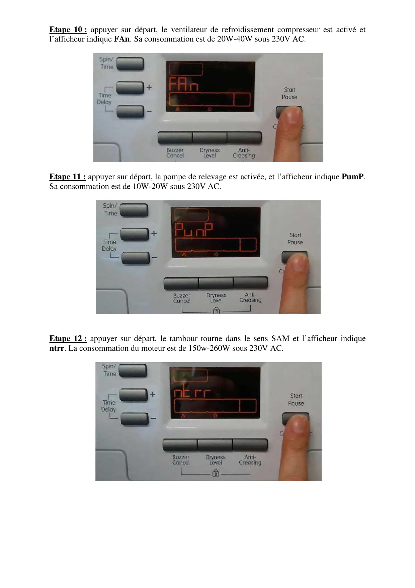
Etape 10 : appuyer sur départ, le ventilateur de refroidissement compresseur est activé etl’afficheur indique FAn. Sa consommation est de 20W-40W sous 230V AC.Etape 11 : appuyer sur départ, la pompe de relevage est activée, et l’afficheur indique PumP.Sa consommation est de 10W-20W sous 230V AC.Etape 12 : appuyer sur départ, le tambour tourne dans le sens SAM et l’afficheur indiquentrr. La consommation du moteur est de 150w-260W sous 230V AC.
4 / 11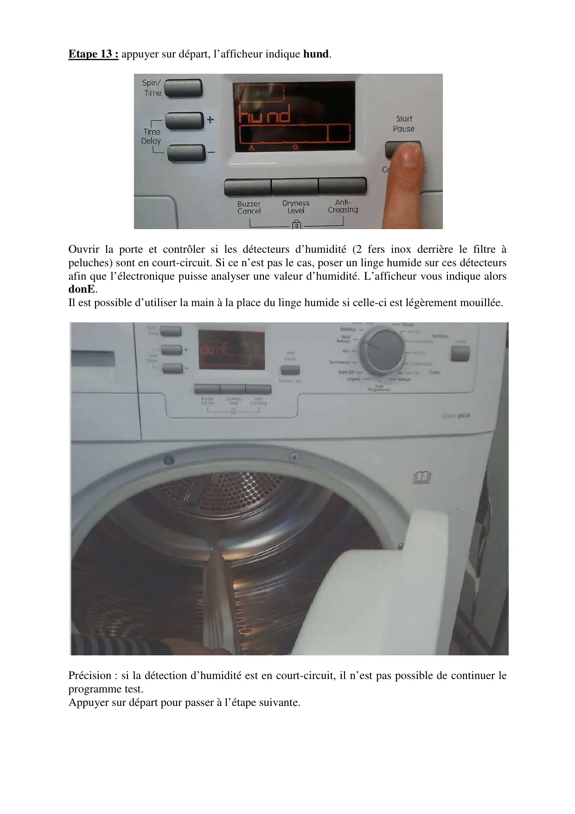
Etape 13 : appuyer sur départOuvrir la porte et contrôlerpeluches) sont en court-circuitafin que l’électronique puissedonE.Il est possible d’utiliser la maiPrécision : si la détection d’huprogramme test.Appuyer sur départ pour passe, l’afficheur indique hund.si les détecteurs d’humidité (2 fers inoxt. Si ce n’est pas le cas, poser un linge humidanalyser une valeur d’humidité. L’afficheurin à la place du linge humide si celle-ci est légumidité est en court-circuit, il n’est pas possier à l’étape suivante.derrière le filtre àde sur ces détecteursr vous indique alorsgèrement mouillée.ible de continuer le
5 / 11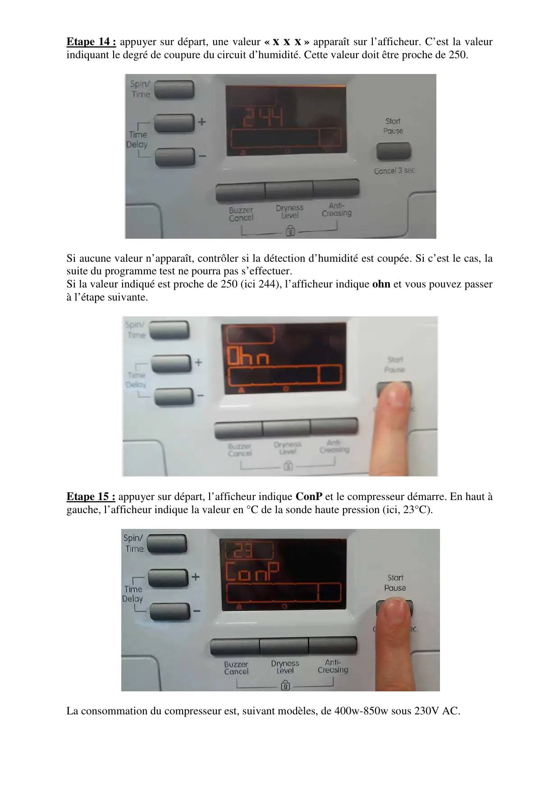
Etape 14 : appuyer sur déparindiquant le degré de coupureSi aucune valeur n’apparaît, csuite du programme test ne poSi la valeur indiqué est procheà l’étape suivante.Etape 15 : appuyer sur départgauche, l’afficheur indique laLa consommation du compresrt, une valeur « x x x » apparaît sur l’affichdu circuit d’humidité. Cette valeur doit être pcontrôler si la détection d’humidité est coupéourra pas s’effectuer.e de 250 (ici 244), l’afficheur indique ohn ett, l’afficheur indique ConP et le compresseurvaleur en °C de la sonde haute pression (ici, 2sseur est, suivant modèles, de 400w-850w soueur. C’est la valeurproche de 250.e. Si c’est le cas, lavous pouvez passerr démarre. En haut à23°C).us 230V AC.
6 / 11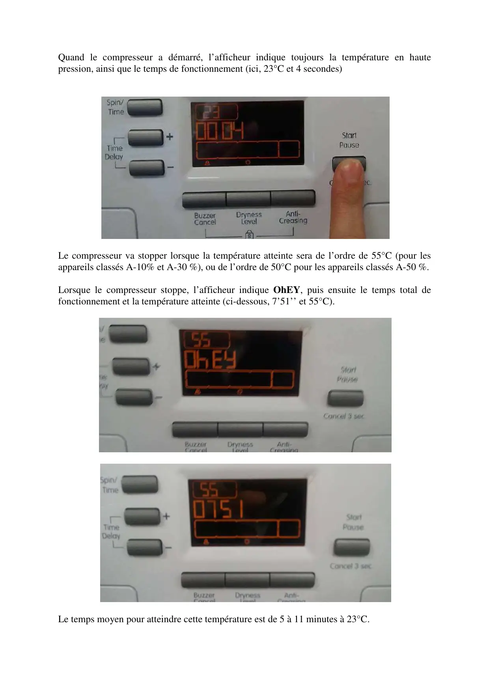
Quand le compresseur a démarré, l’afficheur indique toujours la température en hautepression, ainsi que le temps de fonctionnement (ici, 23°C et 4 secondes)Le compresseur va stopper lorsque la température atteinte sera de l’ordre de 55°C (pour lesappareils classés A-10% et A-30 %), ou de l’ordre de 50°C pour les appareils classés A-50 %.Lorsque le compresseur stoppe, l’afficheur indique OhEY, puis ensuite le temps total defonctionnement et la température atteinte (ci-dessous, 7’51’’ et 55°C).Le temps moyen pour atteindre cette température est de 5 à 11 minutes à 23°C.
7 / 11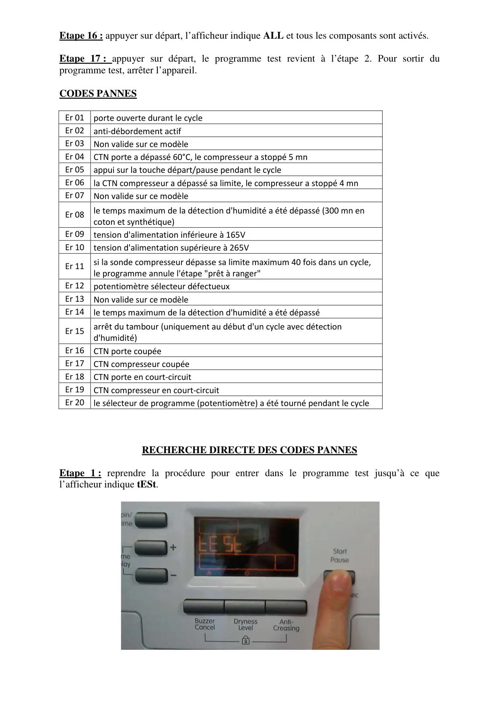
Etape 16 : appuyer sur départ, l’afficheur indique ALL et tous les composants sont activés.Etape 17 : appuyer sur départ, le programme test revient à l’étape 2. Pour sortir duprogramme test, arrêter l’appareil.CODES PANNESEr 01 porte ouverte durant le cycleEr 02 anti-débordement actifEr 03 Non valide sur ce modèleEr 04 CTN porte a dépassé 60°C, le compresseur a stoppé 5 mnEr 05 appui sur la touche départ/pause pendant le cycleEr 06 la CTN compresseur a dépassé sa limite, le compresseur a stoppé 4 mnEr 07 Non valide sur ce modèleEr 08 le temps maximum de la détection d'humidité a été dépassé (300 mn encoton et synthétique)Er 09 tension d'alimentation inférieure à 165VEr 10 tension d'alimentation supérieure à 265VEr 11 si la sonde compresseur dépasse sa limite maximum 40 fois dans un cycle,le programme annule l'étape "prêt à ranger"Er 12 potentiomètre sélecteur défectueuxEr 13 Non valide sur ce modèleEr 14 le temps maximum de la détection d'humidité a été dépasséEr 15 arrêt du tambour (uniquement au début d'un cycle avec détectiond'humidité)Er 16 CTN porte coupéeEr 17 CTN compresseur coupéeEr 18 CTN porte en court-circuitEr 19 CTN compresseur en court-circuitEr 20 le sélecteur de programme (potentiomètre) a été tourné pendant le cycleRECHERCHE DIRECTE DES CODES PANNESEtape 1 : reprendre la procédure pour entrer dans le programme test jusqu’à ce quel’afficheur indique tESt.
8 / 11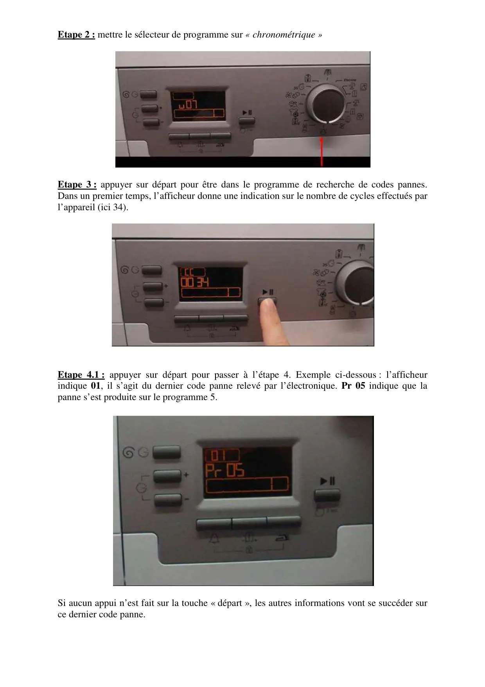
Etape 2 : mettre le sélecteur de programme sur « chronométrique »Etape 3 : appuyer sur départ pour être dans le programme de recherche de codes pannes.Dans un premier temps, l’afficheur donne une indication sur le nombre de cycles effectués parl’appareil (ici 34).Etape 4.1 : appuyer sur départ pour passer à l’étape 4. Exemple ci-dessous : l’afficheurindique 01, il s’agit du dernier code panne relevé par l’électronique. Pr 05 indique que lapanne s’est produite sur le programme 5.Si aucun appui n’est fait sur la touche « départ », les autres informations vont se succéder surce dernier code panne.
9 / 11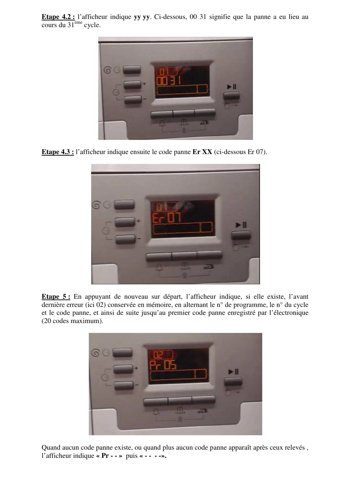
Etape 4.2 : l’afficheur indique yy yy. Ci-dessous, 00 31 signifie que la panne a eu lieu aucours du 31ème cycle.Etape 4.3 : l’afficheur indique ensuite le code panne Er XX (ci-dessous Er 07).Etape 5 : En appuyant de nouveau sur départ, l’afficheur indique, si elle existe, l’avantdernière erreur (ici 02) conservée en mémoire, en alternant le n° de programme, le n° du cycleet le code panne, et ainsi de suite jusqu’au premier code panne enregistré par l’électronique(20 codes maximum).Quand aucun code panne existe, ou quand plus aucun code panne apparaît après ceux relevés ,l’afficheur indique « Pr - - » puis « - - - -».
10 / 11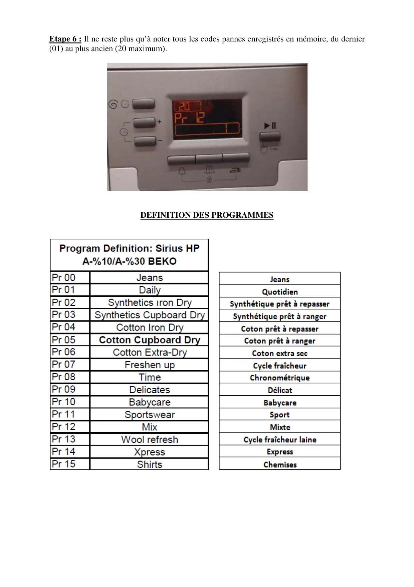
Etape 6 : Il ne reste plus qu’à noter tous les codes pannes enregistrés en mémoire, du dernier(01) au plus ancien (20 maximum).DEFINITION DES PROGRAMMES
11 / 11